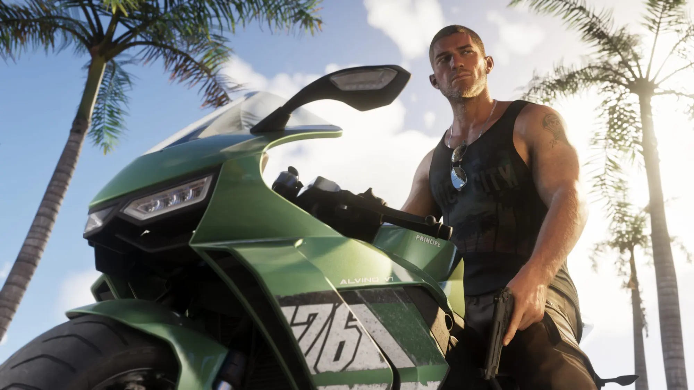

"GTA 6" tem vazamentos com polícia inteligente, prédios exploráveis e apps no estilo WhatsApp
Crédito: Reprodução / Rockstar Games
📅
SETEMBRO 12, 2025
Novos vazamentos de GTA 6 têm deixado os fãs em polvorosa. Entre as revelações, estão aplicativos fictícios que parodiam Uber e WhatsApp, uma polícia mais inteligente e até a promessa de que a maioria dos prédios poderá ser explorada pelo jogador.
Destaques dos vazamentos:
- Apps fictícios: nomes como rideme.app (tipo um Uber paródia), whatup.app (versão de WhatsApp) e até sites governamentais dentro de Vice City.
- Polícia mais realista: perseguições mais inteligentes, NPCs delatores e até a volta das seis estrelas no nível de procurado.
- Prédios exploráveis: cerca de 2/3 das construções poderão ser acessadas, aumentando a imersão.
- Detalhes visuais: melhorias gráficas e até nuvens com física própria.
“Se confirmado, GTA 6 promete ser a experiência mais imersiva da franquia, elevando a interação e o caos urbano a outro patamar.” — Maratonando Geek
Apesar das informações, vale reforçar: tudo ainda se trata de rumores e vazamentos não confirmados oficialmente pela Rockstar. A expectativa é de que o jogo chegue em maio de 2026, mas até lá, muitas mudanças podem acontecer.